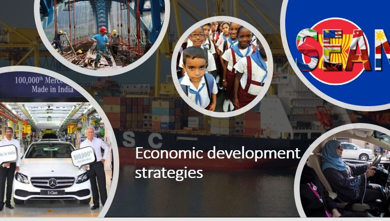
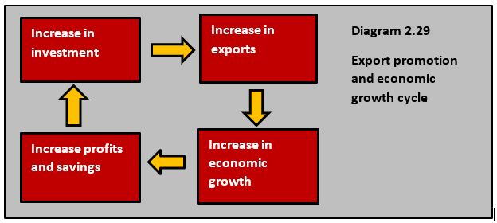
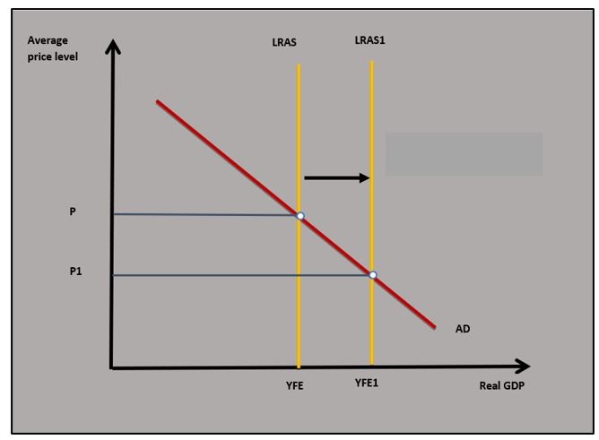
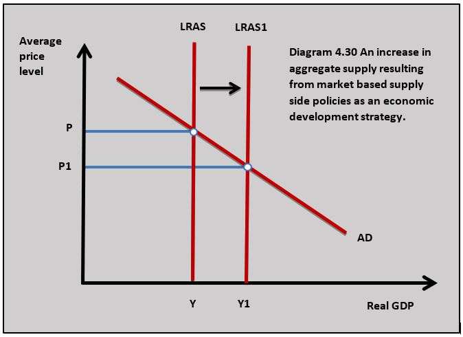
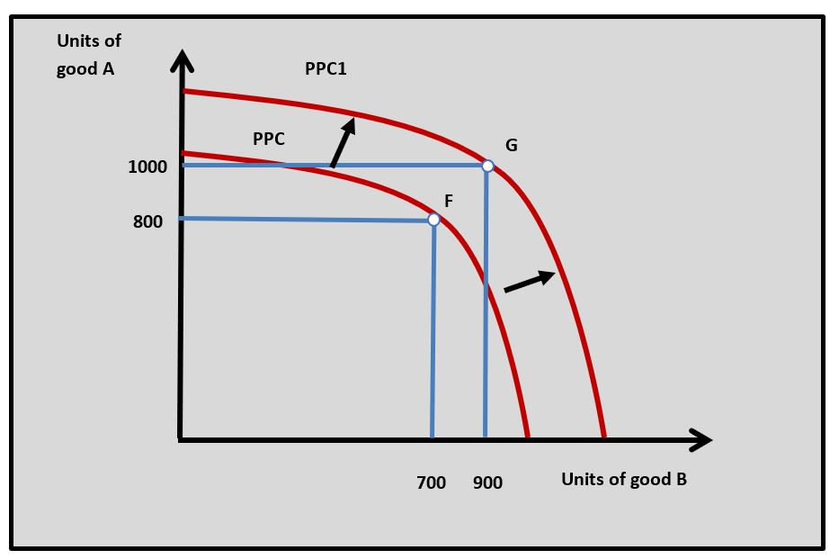
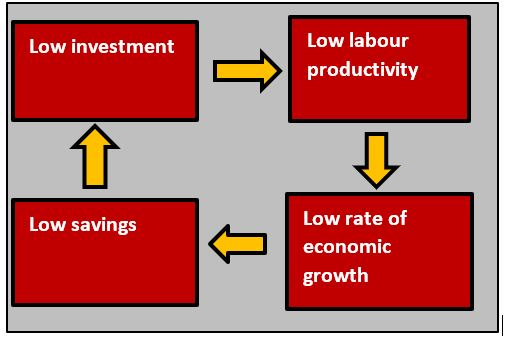
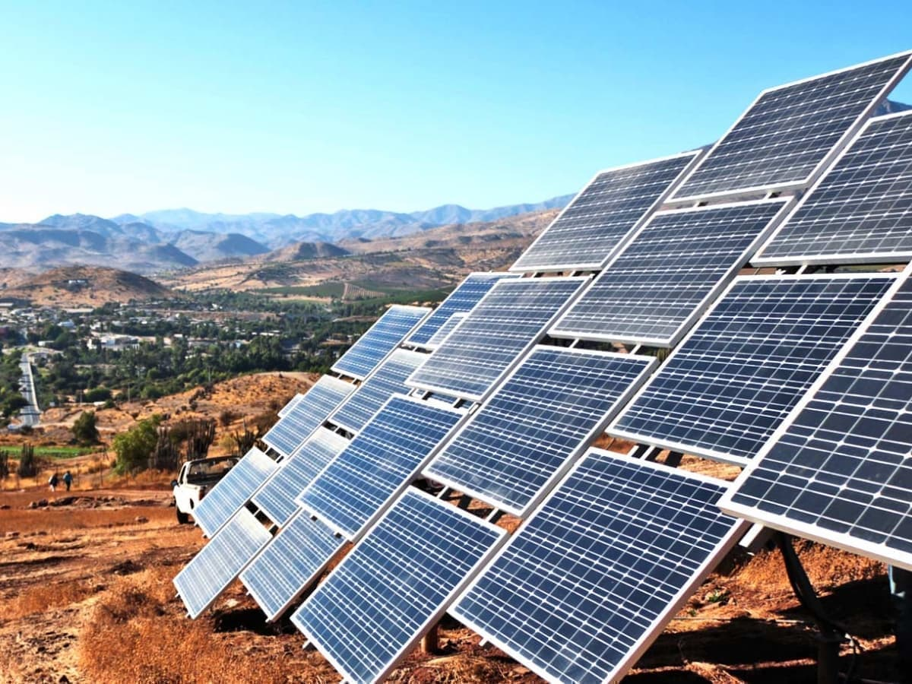

IB Docs (2) Team
IB Docs (2) Team

Unit 4.10: Economic growth and economic development strategies
Governments in ELDCs have an important role to play in developing a strategy to support and facilitate economic growth and development in their country. The focus of government strategy often tends to be on increasing economic growth and using the benefits of growth to enhance economic development.

- Trade strategies for growth and development
- Import Substitution
- Export promotion
- Trade liberalisation
- Economic integration
- Market-based and interventionist supply-side approaches to economic development
- Foreign direct investment
- Foreign aid
- Multilateral development assistance
- Institutional change
Revision material
 The link to the attached pdf is revision material from Unit 4.10: Economic growth and economic development strategies. The revision material can be downloaded as a student handout.
The link to the attached pdf is revision material from Unit 4.10: Economic growth and economic development strategies. The revision material can be downloaded as a student handout.
Governments in ELDCs have an important role to play in developing a strategy to support and facilitate economic growth and development in their country. The focus of government strategy often tends to be on increasing economic growth and using the benefits of growth to enhance economic development.
Trade strategies for growth and development
We know from unit 4.1 in this book that international trade can bring significant economic benefits to a country which can increase economic growth and provide an environment for economic development. This means international trade can be used by a country as an approach to economic growth and development.
Unit 4.1 Benefits of international trade
Import Substitution
This is a development strategy where an ELDC country switches away from imported manufactured goods and develops an industrial base to produce these products in their own country. The approach involves the extensive use of trade barriers to protect domestic manufacturing businesses and government support to develop industries centred on manufacturing. Import substitution is sometimes referred to as an inward-orientated development strategy. Import-substitution has in the past been used as a growth and development strategy by countries such as Chile, Brazil and India.
Evaluation of the strategy
Strengths
- Import substitution means an ELDC can diversify away from producing and exporting primary commodities and the unstable incomes that result from specialising in them.
- Diversifying into manufactured goods means an ELDC can start to access growth markets in goods such as cars, clothing and consumer electronics which are more likely to bring economic growth.
- The trade barrier element of import substitution means domestic industries are protected from competition from MEDCs which allows the ‘infant’ industry to develop and create employment.
- Trade barriers can help to reduce a balance of payments current account deficit and protect foreign exchange reserves.
Weaknesses
- Import substitution using extensive trade barriers can lead to retaliation from MEDCs. This can make it difficult for ELDC exporters to access overseas markets.
- Tariffs and quotas used to protect domestic industries can increase import prices making imported goods more expensive for consumers and increasing the cost of imported inputs to businesses.
- Import substitution relies on businesses in ELDCs being able to access labour, capital and raw materials to support this industrial strategy. For example, a car manufacturer might not be able to access the labour, machinery and components needed to produce their cars efficiently.
- The trade barriers associated with import substitution are counter to the benefits of free trade and bring with them the welfare losses associated with tariffs and quotas.
Export promotion or export-led growth
Export promotion is an economic development strategy that involves a country concentrating resources in the production of manufactured goods primarily for export. Export promotion is sometimes referred to as an outward-orientated development strategy where the government focuses on developing overseas markets to facilitate economic growth through increased exports.
The export promotion approach was seen as a foundation for economic development in countries such as China, Singapore, South Korea, Taiwan and Indonesia.
Although the policy of export promotion varies between countries the overall themes of the approach involve:
- Using trade agreements to reduce trade barriers such as tariffs and quotas to decrease the cost of imported inputs. This also makes export markets more accessible as other countries reduce their trade barriers in a trade agreement.
- Government support for export industries through grants, subsidies, tax incentives and cheap loans to help them establish a level of output that gives them the economies of scale needed to compete effectively on international markets.
- ELDCs often encouraged Foreign Direct Investment by multinationals to give them the knowledge and capital needed to compete in global markets.
- Developing a financial market through the banking system and stock market where firms can raise funds for investment.
- Achieving a high rate of investment in the economy is a key part of the export promotion approach because new, advanced capital allows the LDC to achieve a high level of labour productivity and low unit cost of production.
Evaluation of the strategy
Strengths

- Export promotion allows an ELDC to enter a growth cycle which is shown in diagram 4.29. The key benefit of the exports is the way they provide funds for new investment as firms make more profits from exports. The profits can then be used to buy new capital and improve productivity leading to long-run economic growth.
- Export promotion targets growing markets with positive income elasticities of demand such as consumer electronics, cars and telecommunications. As world incomes rise, these are the products that people want to buy and this gives exporting countries sustained economic growth.
- Export promotion allows a country to develop and exploit its efficiency advantages in areas such as low-cost skilled labour and high rates of investment.
- Export promotion means a country can diversify away from an over-reliance on commodities which means the country spreads its risk across a number of markets. This means if one market declines other markets can be targeted to take its place.
- Export promotion often brings high rates of economic growth which creates employment, increases household incomes and increases tax revenues to improve government services
Weaknesses
- Governments in MEDCs may use protectionism against exported goods from developing countries. Protectionism from the US has been a particular problem for China over the last four years.
- The market for a manufactured good can become saturated with products and this slows the growth of exporting countries. This has been the case in the market for cars where there is currently over-capacity in the industry.
- Export promotion can lead to unsustainable growth if, for example, high demand for raw materials leads to a big rise in input prices which pushes up production costs. The current growth of China and India has led to the rise in the price of commodities used to produce mobile phones, batteries and computers.
- Export promotion can conflict with sustainable development. As manufacturing industries expand it brings with it significant negative externalities and environmental costs. These problems can be localised (pollution in growing cities in China) or more global in the form of climate change.
- The high economic growth rates that often come with export promotion lead to rising income inequality.
Vietnam has followed an export promotion approach to economic development over the last 25 years. It has adopted an aggressive free-market approach to its economy by deregulating markets and reducing taxes. Vietnam now has one of the lowest tax regimes in the world with the top rate of tax capped at 35% and expatriate employees paying a flat rate of just 20%.
This makes Vietnam a magnet for FDI with Proctor and Gamble, Unilever and IBM all attracted to the country. Vietnam has also liberalised trade by lowering tariffs and it has joined the ASEAN free trade area. Top electronics manufacturer, Samsung exports huge amounts from Vietnam and is one of the MNCs that drives the country’s exports. With average annual growth rates over the last 10 years of around 7%, Vietnam is a model of how to export promotion and deliver economic development.
Questions
a. Define the term export promotion. [2]
Export promotion is an economic development strategy that involves a country concentrating resources in the production of manufactured goods primarily for export.
b. Outline two methods Vietnam uses as part of its export promotion development strategy. [4]
Vietnam has used the following methods as part of its export promotion strategy:
- Reduced direct taxation
- Deregulation of markets
- Reduce trade barriers
- Joined the ASEAN free trade area.
c. Using an AD/AS diagram, explain how an export promotion strategy might increase potential economic growth. [4]

Export promotion can increase productive and allocative efficiency because reducing trade barriers increases competition and comparative advantage in domestic markets. Greater export opportunities for domestic firms also increases their efficiency as they benefit from economies of scale. This causes potential output to increase and LRAS shifts to LRAS1 in the diagram.Investigation
Research other economic indicators in Vietnam which give you a fuller picture of Vietnam’s economic development and the success of its export promotion approach.
Trade liberalisation
Trade liberalisation is closely linked to the policy of export promotion, but it can also be seen in the wider context of using the benefits of free trade to facilitate economic development. The benefits of trade are covered in detail in Unit 4.1 of this book.
Unit 4.1 Benefits of international trade
Trade liberalisation involves countries reducing or removing the trade barriers such as tariffs, quotas and subsidies. Trade liberalisation also involves World Trade Organisation (WTO) taking an active role in setting up and enforcing a framework that ensures countries reduce trade barriers.
Economic integration
Bilateral, regional and multilateral free trade agreements are an important part of an economic development strategy based on international trade. An example of a bilateral trade agreement would be the free trade agreement between China and Pakistan which was first signed in 2012 and is currently in its second phase.
Regional and multilateral free trade agreements have been completed between groups of developing countries in different parts of the world. For example, Mercosur is a common market in South America that includes Argentina, Brazil, Paraguay and Uruguay.
Trading blocs can support economic development through trade because ELDCs that work together as a group of countries are more likely to have more negotiating power against established MEDCs and trading blocs like the EU.
Supply-side policies
Market-based supply-side policy as an economic development strategy

Detailed coverage of market-based supply-side policies is covered in Unit 3.7(1). A market-based supply-side policy can be used as a development strategy when the government allows the market to facilitate economic development in an ELDC. By creating greater efficiency on the supply side the potential output of the ELDC is increased and this leads to long-term economic growth and economic development. Diagram 4.30 illustrates the impact of market-based supply-side policies on potential output.
The approach involves:
- Encouraging an export promotion strategy through liberalised free trade involving the reduction and elimination of trade barriers.
- Reducing the restrictions on capital (money) flows in and out of the country so that ELDCs have access to more finance to fund increased investment.
- Decreasing direct taxation on individuals and businesses increases employee motivation, investment and enterprise. It can also encourage foreign direct investment (FDI).
- Privatisation of key domestic industries such as energy, transport and communications to improve productive efficiency in important parts of the economy.
- Deregulation of markets encourages competition and reduces constraints on business decision-making. Deregulation can also reduce business costs.
Evaluation of the strategy
Strengths
- Creating greater efficiency on the supply side can increase long-run aggregate supply leading to long-run economic growth and development.
- Encouraging free trade leads to lower prices in the domestic economy and the accompanying welfare gains for consumers.
- Less regulated markets and lower rates of tax increases domestic investment and enterprise.
- A business environment that is more attractive to firms can increase foreign direct investment.
Weaknesses
- Deregulated markets are associated with market failures such as negative externalities and monopolies. The environmental costs of deregulation can be significant, and this can conflict with the objective of sustainable development.
- A market-based approach can lead to the widening of income inequalities in ELDCs. For example, reducing taxes on individuals and businesses is likely to favour households on higher incomes relative to those on lower incomes.
- Increasing rates of FDI can mean ELDCs lose some of their independence and control over their economy.
- By reducing trade barriers and entering into a trade agreement with MEDCs, ELDCs can leave their domestic producers exposed to foreign competition which leads to business failure and unemployment.
- Inflows of financial capital because of liberalised financial market mean there could be greater outflows of funds on the current account balance of payment. Increase foreign portfolio investment may also destabilise the ELDC's currency and its financial markets.
Interventionist policies supply-side policy as an economic development strategy
Detailed coverage of interventionist supply-side policies is covered in Unit 3.7(2). An interventionist development strategy is where the government is actively involved in the economy through its own expenditure and activities to facilitate economic development in an ELDC.
Unit 3.7(2) Interventionist supply-side policies
The approach involves:
- Government investment in infrastructure projects such as roads, water and energy supply, ports and airports, and telecommunications. Infrastructure improvements provide the framework for businesses to function efficiently.
- Improving human capital through effective education and training. By doing this the government increases labour productivity in the economy.
- Interventionist policies to manage the distribution of income and take people out of poverty makes sure economic development benefits the whole population and is sustainable.
- State provision of merit and public goods means the output of these goods is at the socially efficient level and increase welfare. For example, widening the provision of state-provided healthcare is likely to support sustainable development.
Evaluation of the strategy
Strengths
- Direct government intervention on the supply side can increase potential output and increase long-run aggregate supply which allows the economy to achieve long-run economic growth and development. This is shown in diagram 4.30.
- An interventionist approach is important in achieving a socially efficient output in the provision of public goods (infrastructure) and merit goods (education) which are crucial to development.
- State intervention is more effective in managing the distribution of income compared to a market-based approach.
Weaknesses
- Government-funded and managed projects are sometimes associated with excessive bureaucracy, corruption and inefficient management.
- Direct intervention needs finance either through taxation, government borrowing or the opportunity cost of reduced expenditure in other areas.
- Sometimes ELDCs can get into financial difficulties if the policy is funded by borrowing and this increases interest and repayment costs. This is a particular problem if a debt is external and funds flow out of the ELDC economy.
- Interventionist policies involve political influence in government-funded and managed projects. This can involve political decision-making and corruption which can conflict with economic development objectives.
The World Bank has recently published a report on education in Latin America and the Caribbean. The report focuses on the public school systems across the continent. The World Bank sees investment in kindergarten, primary and secondary school education as a key to long-term economic growth and development. As one author of the report said, ‘skilled workers, engineers, teachers, doctors and scientists of the future come from today’s schools’.
But Latin America’s education systems do not perform well relative to global standards and they lag behind their counterparts in Europe and Asia. Cuba’s school’s are an exception and the World Bank reported on their schools as having ‘high standards with effective teachers’.
Questions
a. Explain how market-based supply-side policies can be used to increase economic development. [10]
Answers might include:

- Definitions of market-based supply-side policies and economic development.
- A diagram to show how market-based supply-side policies can increase potential output where PPC shifts to PPC1.
- An explanation of market-based supply-side policies such as trade liberalisation, reduced taxes, deregulation and privatisation.
- An explanation of how market-based supply-side policies can improve efficiency in an economy which can increase potential output.
- A example of a country using a market-based supply-side policy to increase economic development such as Vietnam.
b. Evaluate the effectiveness of government policies to improve education to increase economic development. [15]
Answers might include:
- Definition of economic development (the definition in part a can be used in part b).
- A diagram to show how a policy to improve education can increase potential output as the long-run aggregate supply curve shifts from LRAS to LRAS1.
- An explanation that improving education in an economy can increase potential output as a country's labour force becomes more skilled and more productive.
- An explanation that improving education can allow individuals to make life decisions that increase economic development such as decisions on healthcare and healthy lifestyle.
- An example of a country using education to increase economic development such as Cuba.
- Evaluation might include discussion of the costs of investing in education and possible inefficiency of government provision. There could also be some discussion of alternative supply-side policies to increase economic development such as improving healthcare, developing infrastructure and encouraging FDI.
Investigation
Research another school system in a Latin American country and its possible impact on the country's development.
Inward foreign direct investment (FDI)
FDI is investment in production in one country by a business from another country. It can take the following forms:
- One firm buys another firm in a different country. For example, Volkswagen buys a Chinese car manufacturer in China.
- When a firm opens a new production plant or outlet in another country. For example, McDonald’s opens new outlets in Vietnam.
- When a firm expands its operations of an existing business in that country. Samsung increases the size of its plant in Brazil.
Multinational corporations (MNCs)
MNCs are businesses that have significant production operations in at least two countries and are responsible for a high proportion of FDI in ELDCs.
Evaluation of the strategy
Strengths
- FDI increases investment in an ELDC which raises its potential output shifting the long-run aggregate supply curve outwards.
- The MNCs that are responsible for FDI, export their output from an ELDC they produce in which increases the ELDC's export income. This improves the ELDC's current account balance of payments and earns them foreign exchange.
- FDI through MNCs can create significant amounts of direct employment and this reduces unemployment in an ELDC.
- Working in MNCs can also increase the skills of workers in ELDCs.
- Employment and income can be created in the supply chains of the MNCs located in the ELDC.
- FDI can provide production knowledge and innovation that firms in ELDCs can learn from. When, for example, Nike opened a factory in Vietnam other Vietnamese sports apparel manufacturers learned from Nike’s production methods.
Weaknesses
- FDI by MNCs can provide competition for domestic producers in ELDCs and drive them out of business.
- FDI can lead to the repatriation of profits to their host country which is an outflow on the ELDC's balance of payments current account and reduces their GNI.
- Where FDI leads to the proliferation of MNCs in ELDC markets it can lead to a loss of national identity. Fast food outlets like Macdonald’s and Starbucks are often accused of compromising the identity of the restaurant market in ELDCs.
- FDI is often attracted to ELDCs because of lower environmental regulations and this can have negative effects on the environment in the ELDC and conflict with the aim of sustainable development.
- FDI is sometimes attracted to ELDCs because of their relatively low labour costs. Many of the famous brands produced by MNCs such as Gap have been accused of paying low wages and having poor working conditions.
Foreign aid
Aid is financial and non-financial support given to countries by governments or agencies of other countries. ELDCs are often the recipients of aid from MEDCs and aid can play a role in an ELDC's approach to development.
Types of aid
Foreign aid comes in different forms and has different objectives. The main types of foreign aid include:
Bilateral aid is aid given by one country to another. For example, the UK gave £71m of bilateral aid to Uganda to fund things such as healthcare, education and governance. If aid was given by a government of an MEDC to an LEDC it is called Official Development Assistance(ODA).
Multilateral aid is aid given to a country by an agency such as the World Bank, UN or World Health Organisation. These organisations are generally funded by different governments, individual donations or business organisations. For example, the UN has released US$15 million to help vulnerable countries deal with the spread of the coronavirus.
Unofficial aid is funds given by Non-Governmental Organisations (NGOs) like Oxfam, the Red Cross and Médecins Sans Frontières. This is often used in a humanitarian crisis. For example, Médecins Sans Frontières is currently giving AID to Yemen to deal with the health crisis resulting from its civil war. It generally takes the form of food aid, medical aid and emergency relief funds.
Soft loans are loans made in an aid situation where the recipient country is charged below the market rate of interest. Angola, for example, has recently received soft loans from China to build new infrastructure.
Grant or project aid is a form of bilateral aid where a government gives money to another country to fund a particular project. For example, Norway gave funds to the Guyanan government to fund the construction of a dam.
Tied aid is where aid is given to a recipient country who in turn agrees to something of benefit to the donor country. The Malaysian government was given funds by the UK to build a dam and, in return, the Malaysian government agreed on controversial defence contracts with UK arms manufacturers.
Debt relief occurs when an ELDC has a financial crisis which is often the result of high levels of external debt. In this situation donor countries, the IMF and the World Bank can offer an ELDC an extension on a loan, reduced rates of interest or even debt cancellation. The IMF has given debt relief to 27 countries to support them through the Covid19 crisis.
Evaluation of the strategy
Strengths
- Aid can provide the necessary foreign exchange to ELDCs which enables them to buy imported goods that can be critical for development. If an ELDC can use foreign aid to import capital goods it can support an interventionist supply-side approach to economic development.
- ELDCs often find it difficult to fund investment projects because of low levels of savings and tax revenues. Aid can be used to fund investment projects and break the poverty cycle. This can be particularly important for major infrastructure projects.
- Foreign Aid can come with support from an MEDC government on how best to use the aid as part of a development strategy.
- Aid provides soft loans for development that do not have the high-interest costs associated with borrowing at normal market interest rates.
- Foreign aid is sometimes essential in a humanitarian crisis where an ELDC needs aid to support them in a natural disaster.
Weaknesses
- The funds given in an aid situation can often be misused and lost through corruption, so the aid does not reach its intended recipients.
- Foreign aid can encourage a dependency culture in an ELDC. It is important for countries to develop the capital markets, savings culture and tax revenues needed to fund projects themselves. It is argued that in the long run, this is the only way a country can sustain economic development.
- Any foreign aid in the form of borrowing adds to an ELDC’s total debt and has to be repaid along with the interest payments. Because it is borrowed from abroad it will be external debt and will be an outflow on the balance of payments current account.
- Tied aid can make an ELDC more dependent on an MEDC donor country and this type of aid can be subject to corruption.
Jordan is one of the biggest recipients of foreign aid in the world. But it has also come under huge scrutiny for what it is doing with its aid. This is a resource-poor Middle Eastern country, which received $2.35 billion in foreign aid last year. Analysis by the World Bank makes uncomfortable reading for Jordan’s donors. Its report found that over the last 10 years $3.13 billion has been moved into offshore accounts in Switzerland, Luxembourg and the Cayman Islands.
The report identifies 7.5% of Jordan’s aid has been taken by rich elites. Jordan’s management of its aid is difficult to accept when you consider its current debt burden is 96% of GDP. A senior Jordanian minister said the World Bank Report ‘does not have conclusive evidence of activities that require launching an investigation’.
Questions
a. Outline the difference between bilateral aid and multilateral aid. [3]
Bilateral aid is aid given by one country to another and multilateral aid is aid given to a country by an agency such as the World Bank.
b. Explain how aid in the form of a soft loan can affect an ELDC's balance of payments. [4]
A soft loan would flow into a country as a net current transfer on its current account of the balance of payments and would be a credit item. The interest payments on the soft loan would flow out as a net income on the current account of the balance of payments as a debit item.
c. Using a real-world example, evaluate the effectiveness of aid to support economic development. [10]
Answers might include:

- Definitions of aid and economic development.
- A diagram to show how aid might provide a useful way to break the poverty cycle.
- An explanation that aid can help to fill the savings gap in an ELDC and facilitate investment which is important to increase potential output which is needed for economic development.
- An explanation aid is an important source of foreign exchange which can be used to support international trade and can contribute to economic development.
- An explanation that aid can be used to fund significant infrastructure projects such as roads, energy and communication which are important for the overall functioning of the economy and economic development.
- An example of the use of aid to support development such as in Jordan.
- An evaluation might include discussion of the problems of using aid to support development such as corrupt use of funds, increased dependency in ELDCs, inefficient use of aid funds on projects and interest on soft loans is an outflow on the current account balance of payments. Evaluation could also consider an alternative approach to development such as export promotion.
Research another country in the world that is a major recipient of aid.
Multilateral development assistance
There are two organisations in the world that exist to support economic development. These are the World Bank and the International Monetary Fund(IMF)
The World Bank
The role of the World Bank is to provide finance and technical support to developing countries to achieve sustainable economic development. One of the key objectives the World Bank has set is to:
- End extreme poverty by reducing the percentage of people living on less than US$1.90 a day to no more than 3%.
- Increasing equality in developing countries by increasing the income of the bottom 40% of the population.
The world bank provides low-interest loans, credit, and grants to developing countries to support economic development. This includes funding for education, health, infrastructure and environmental projects. The World Bank also offers technical assistance, advice and project management expertise to ELDCs.
IMF
There are 189 countries that are part of the IMF. The IMF's main function is to ensure the stability of the international monetary system through the system of exchange rates and international payments. This aim helps support international trade. To achieve its central objective the IMF also set the following goals:
- Maintain global monetary cooperation between countries
- Ensure financial stability
- Make sure there are funds available to support international trade
- Promote full employment
- Support sustainable economic growth and development
- Reduce poverty world.
Institutional change
One of the barriers to economic development is institutional barriers in ELDCs. The focus on the institutions that can be improved as part of a strategy to achieve economic development is access to banking and finance, empowering of women, reducing corruption and increasing property rights.
Access to banking
In order for businesses to start and function efficiently, they need access to finance. Without the funds to pay for machinery and equipment, it is very difficult for businesses to set up and start producing. By creating an effective banking system an economy can grow more businesses which increases potential output and encourages economic development. The banking system needs to provide systems for payments and receipts, savings, credit and insurance. Governments in LEDCs can do this with the support of the World Bank. The growth of the internet has made banking much more accessible to small businesses and individuals in ELDCs where mobile banking has allowed payments and receipts to be carried out online.
Microfinance
Microfinance or microcredit offers small loans to people who do not normally qualify for traditional banking credit, to encourage entrepreneurship. For example, 20 million people in Bangladesh, most of them women, use microcredit in an effort to lift themselves out of poverty.
Microfinance broadens the base of entrepreneurs in the economy and allows them to build businesses that can increase the potential output of the economy and increase economic development. Allowing people on low incomes to access funds also has the benefit of increasing equality and reducing poverty.
Empowerment of women
Empowerment of women is the process of women gaining power and control over their lives and increasing their ability to make their own choices. Empowering women is about increasing gender equality and achieving sustainable economic development.
Increasing the participation rates of women in the labour market and as entrepreneurs will increase the potential output of the economy and facilitate economic development. For example, Bangladesh has tried to create an institutional framework that enhances women’s rights and promotes gender equality by offering:
- Free education for girls up to grade 12.
- Support to small and medium-sized enterprises (SMEs) founded by women.
- Increased participation of women in politics through more representatives in parliament.
Women in Saudi Arabia have welcomed new laws allowing them to drive, travel, divorce, and apply for official documents without the permission of a male guardian. The new measures introduced by the Saudi government are part of the incremental dismantling of guardianship laws that have kept in marginalised gender roles.
Legal changes will allow women to run and manage businesses, attend conferences and be fully involved in education. It is also hoped the changes will improve the situation of abused women who are affected by domestic violence.
 Worksheet questions
Worksheet questions
Question
Explain two reasons why empowering women might increase potential output in an ELDC. [10]
- Definition of empowering women and potential output.
- A diagram to show how empowering women might increase potential output by shifting the LRAS curve outwards from LRAS to LRAS1.
- An explanation that empowering women could increase potential output if women are better educated and can be more productive workers.
- An explanation that empowering women to become entrepreneurs creates new businesses and greater innovation which increases potential output.
- An explanation that if women are more involved role in government this could improve government decision-making in economic and industrial policy which could increase potential output.
- An example of where empowerment of women could increase potential output such as in Saudi Arabia.
Investigation
Research another country in the world where legal changes have empowered women.
Reducing corruption
Reducing corruption is important in removing an important barrier to economic development. Anti-corruption strategies in LEDCs need the cooperation of all the different stakeholders in the country: politicians, government officials, businesses and individual citizens. The culture of corruption needs to be reduced through effective governance and legal process.
Property and land rights
Assigning property and land rights to individuals encourages entrepreneurship because it allows people to benefit from owning property and building the value of their businesses. Increasing the number of small businesses widens the productive base of the economy and can increase potential output. The process of assigning property and land rights by the government is an important part of the legal process.

The economic development strategy in Morocco can be seen as a model of sustainability. The Moroccan government has focused on green energy as a central element of its plan for economic development. The country aims to produce 52 per cent of its energy from renewable sources by 2030, is replacing its old fleet of buses with fuel-efficient vehicles, has Africa's first cycle hire scheme and introduced country-wide farming methods that adapt to climate change.Research into another country which is using sustainability as an important part of its development strategy.
Which of the following is not part of an import substitution development strategy?
FDI is not part of import substitution. Import substitution relies on domestic producers.
Which of the following is a characteristic of an export promotion development strategy?
Developing an effective financial market is part of an export promotion strategy.
Which of the following is least likely to be part of a market-based supply-side approach to economic development?
Trade barriers are not part of an export promotion strategy.
Which of the following is most likely to be an advantage of interventionist supply-side policies to increase economic development?
Interventionist policies are more likely to protect the environment and increase equality.
Which of the following is least likely to be a benefit of FDI in Country X?
If MNC's locate in an ELDC they may send profits back to their home country.
Which of the following is a type of aid that involves extension on a loan, reduced rates of interest or an agreement not to repay some of the loan?
 Twitter
Twitter
 Facebook
Facebook
 LinkedIn
LinkedIn